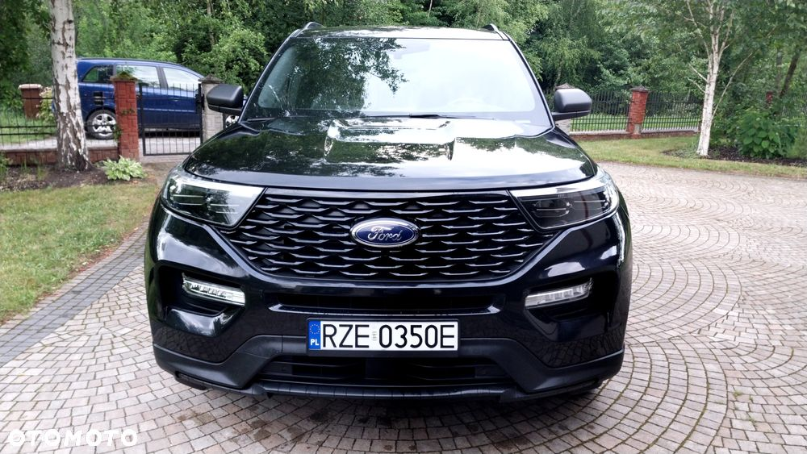
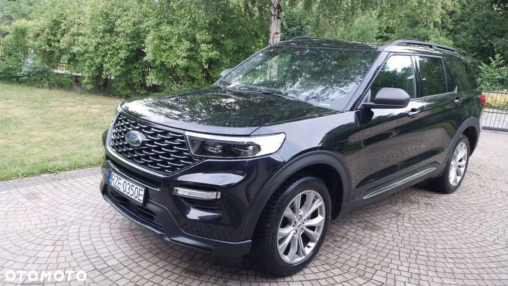
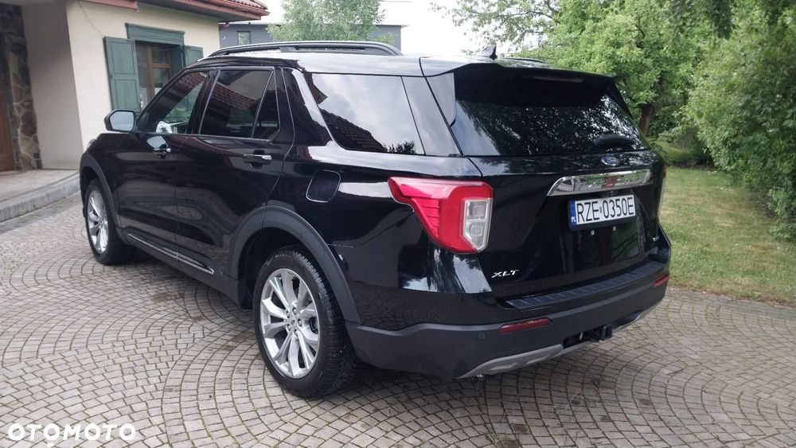
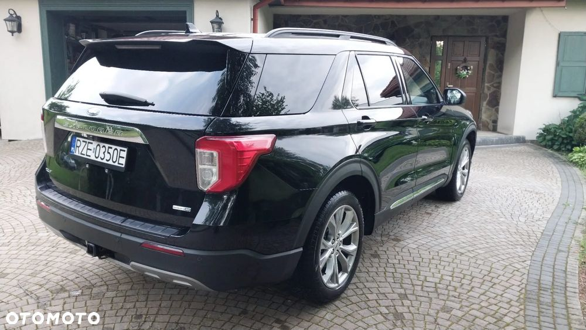
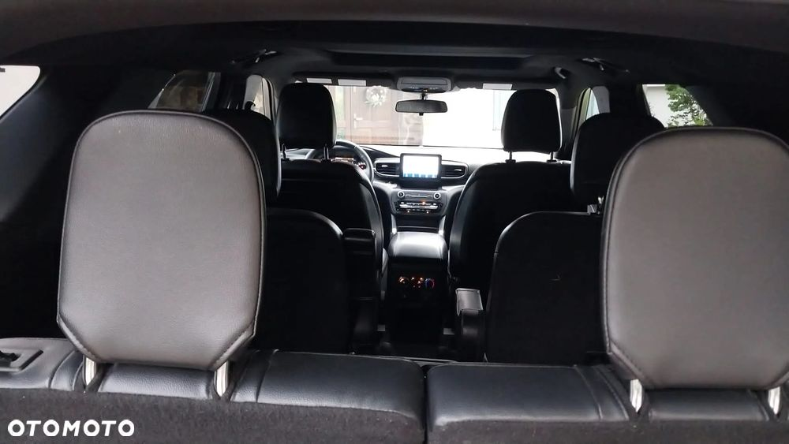
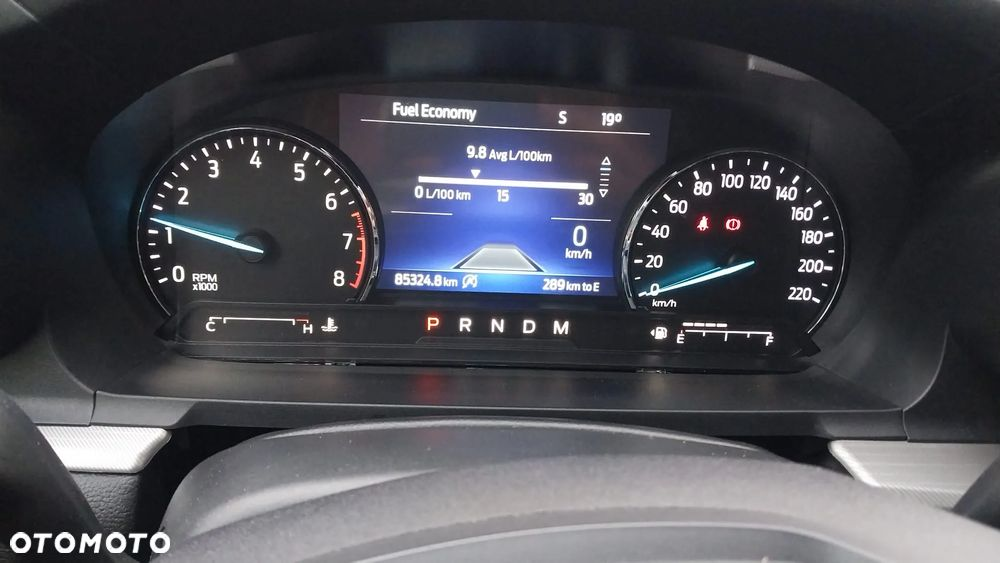

Witam,mam do sprzedaży Ford Explorer z 2020 roku, silnik o pojemności 2.3 l który posiada 300 KM oraz 420 Nm, napęd na 4 koła, 10 stopniowa automatyczna skrzynia biegów, asystent pasa ruchu sam prowadzi auto oraz dostosowywuje odległość od poprzedzającego auta. Bardzo przestronny samochód, 6 miejsc, w tym 2 kapitańskie w środkowym rzędzie. Podgrzewane fotele, podgrzewana kierownica, dwustrefowa klimatyzacja, skóry, kamera parkowania, radar który podczas cofania alarmuje o zbliżającym się samochodzie, hak. Zapraszam do kontaktu
